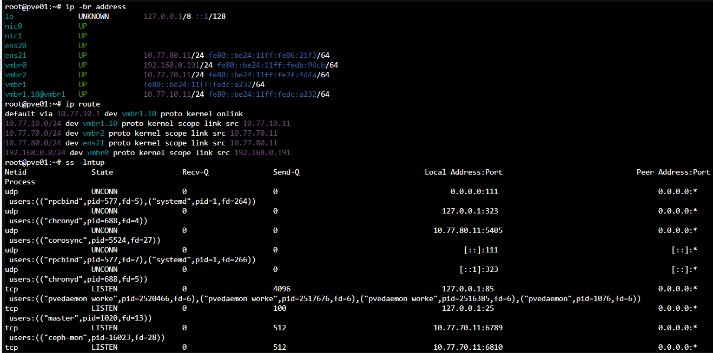
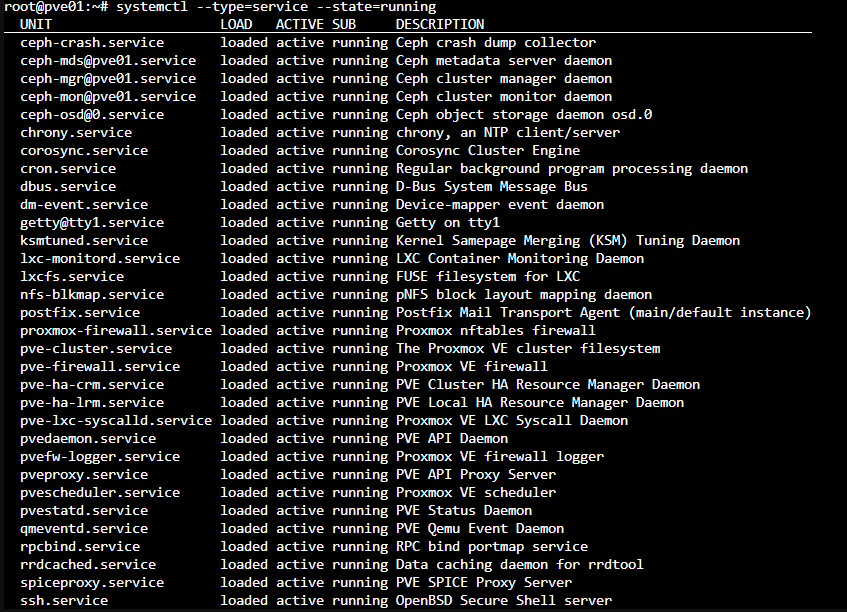
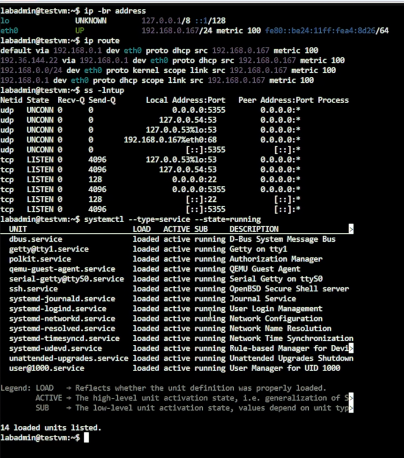
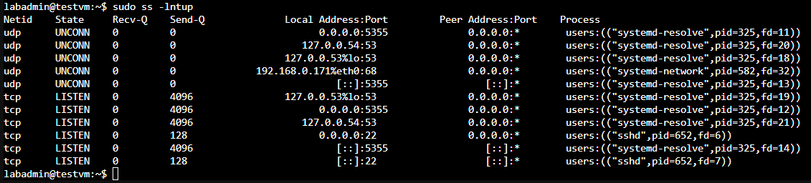

Day 09｜狀態式防火牆如何運作：封包路徑、連線狀態與信任邊界
對應文章：Day 09｜狀態式防火牆如何運作：封包路徑、連線狀態與信任邊界
本日不部署防火牆規則，先把誰要連到誰寫成可以在 Day 14 實作的清單。若沒有先做這一步，後面很容易因為服務暫時連不到就建立過寬的 any to any。
1. 確認固定區域
以實作環境設定索引內的網路、VM 與 Port 表為唯一參數來源：
| 區域 | 網段 | 主要主機 |
|---|---|---|
| Management | 10.77.10.0/24 |
OPNsense 與 Day 15 起的 pve01～pve03 管理位址 |
| Service | 10.77.20.0/24 |
proxy、app、client、monitor |
| Database | 10.77.30.0/24 |
pg01～pg03、Patroni、etcd |
| Backup | 10.77.40.0/24 |
backup01 |
| Bastion DMZ | 10.77.50.0/24 |
jump01 |
| OpenVPN | 10.77.60.0/24 |
遠端使用者 |
| Ceph | 10.77.70.0/24 |
PVE MON／OSD，不經 OPNsense |
| Corosync | 10.77.80.0/24 |
PVE 叢集通訊，不經 OPNsense |
2. 建立流量需求表
逐列記錄來源、目的、Port 與理由：
| 來源 | 目的 | Port | 是否允許 | 理由 |
|---|---|---|---|---|
Cloudflare CLOUDFLARE_IPV4 |
公開 WAN 入口，DNAT 至 Web VIP 10.77.20.10 |
443 | 是 | 公開 Web 入口 |
| Internet | jump01 10.77.50.11 |
WAN TCP 45222，DNAT 至 TCP 22 | 是 | 受控管理入口 |
| Internet | DB VIP／pg01～03 | 5432 | 否 | DB 不公開 WAN |
| jump01 | 授權內部主機 | 22 | 是 | ProxyJump |
| proxy01／02 | pg01～03 | 5432、8008 | 是 | DB 流量與 Patroni Health Check |
| pg01～03 | pg01～03 | 5432、2379、2380 | 是 | WAL、etcd Client／Peer |
| pg01～03 | backup01 | Repository 所需 SSH | 是 | pgBackRest Repository |
| monitor01 | 受監控主機 | Exporter Port | 是 | Metrics Scrape |
| VPN Admin | pve01～03 | 8006 | 是 | PVE Web UI |
| VPN Client | DB VIP | 5432 | 依群組 | 私有 DB 入口 |
| VPN Client | pg01～03 | 5432、8008、2379 | 否 | 不繞過 VIP 與管理邊界 |
3. 盤點現有暴露面
在已存在的 Debian VM 執行：
ip -br address
ip route
sudo ss -lntup
systemctl --type=service --state=running
在 PVE 節點執行：
ip -br address
ip route
ss -lntup
systemctl --type=service --state=running
pvesh get /cluster/firewall/options

圖（一）PVE 節點的介面與路由表指出一般對外流量、Ceph 與 Corosync 使用不同路徑，ss 則列出本機正在監聽的 Socket。

圖（二）PVE 節點的執行中服務可與監聽連接埠交叉比對。

圖（三）Debian 測試 VM 的介面、路由、監聽 Socket 與執行中服務。

圖（四）以足夠權限執行 ss 後，可以確認監聽 Socket 所屬程序。
測試 VM 使用 DHCP，因此圖（三）與圖（四）的位址不同；這不影響監聽程序的判讀。
保存盤點結果，但不要讓 Public IP、MAC、Token 與憑證內容出現在文件中。
4. 記錄後續驗收方法
Day 09 先定義測試來源、操作方法與預期結果。防火牆規則及對應服務完成後，再從指定來源執行測試並保存結果：
| 測試來源 | 操作方法 | 預期結果 | 可執行階段 |
|---|---|---|---|
proxy01 |
nc -vz -w 3 10.77.30.11 5432 |
允許連到 PostgreSQL | proxy 與 PostgreSQL 服務完成後 |
jump01 |
nc -vz -w 3 10.77.30.11 5432 |
拒絕直接連到 PostgreSQL | PostgreSQL 服務完成後 |
| VPN Admin | curl -kI --connect-timeout 5 https://10.77.10.11:8006/ |
允許連到 PVE Web UI | Day 17 完成 VPN 與規則後 |
| VPN 一般使用者 | nc -vz -w 3 10.77.30.11 8008 |
拒絕直接連到 Patroni API | Patroni 服務完成後 |
本日只記錄方法與預期結果，不把尚未執行的測試寫成驗證成功。後續測試時，允許項目要看到連線成功，拒絕項目則要搭配 OPNsense Live View 或規則計數器確認封包確實被規則阻擋，避免把服務尚未啟動誤判成防火牆拒絕。
此時 pve01～pve03 還在路由器 Bootstrap 網段，不提前改線。清單先記錄 Day 15 的最終位址 10.77.10.11～.13，以及 PVE 只需要 DNS、NTP、HTTP／HTTPS 更新等必要出口；完成 OPNsense 規則後才逐台切換 Default Gateway。